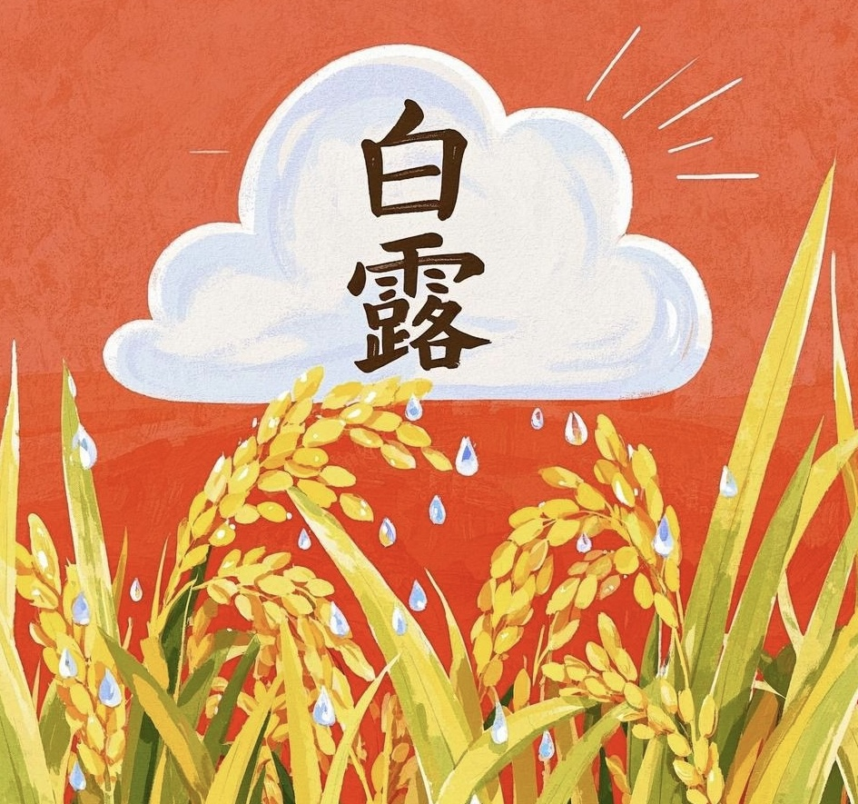

Mangzhong, as the ninth solar term among the twenty-four solar terms, marks the official beginning of midsummer season. This season has abundant sunshine and rainfall, making it a crucial period for crop growth. It not only holds significant importance in agricultural production, but also has interesting connections between its characteristics and personality traits.
芒种是二十四节气中的第九个节气，标志着盛夏的正式开始。这个季节阳光充足，雨量充沛，是作物生长的关键时期。它不仅在农业生产中具有重要意义，而且其特征与人格特质之间也有着有趣的联系。
介绍链接：http://baike.baidu.com/l/lPuoYrR7
Bailu is the 15th solar term in the "24 solar terms", the third solar term in autumn, and the end of the Shenyue and the beginning of the Youyue in the dry and branch calendars. Dou Zhigeng; The sun reaches 165 degrees longitude; The festival falls on September 7-9 in the Gregorian calendar. White dew "is an important solar term that reflects the growth of cold air in nature. Due to the cold air shifting from defense to attack, there is sunshine and heat during the day, but the temperature drops quickly after evening, and the temperature difference between day and night gradually widens.Bailu is the 15th solar term in the "24 solar terms", the third solar term in autumn, and the end of the Shenyue and the beginning of the Youyue in the dry and branch calendars. Dou Zhigeng; The sun reaches 165 degrees longitude; The festival falls on September 7-9 in the Gregorian calendar. White dew "is an important solar term that reflects the growth of cold air in nature. Due to the cold air shifting from defense to attack, there is sunshine and heat during the day, but the temperature drops quickly after evening, and the temperature difference between day and night gradually widens.
白露，是“二十四节气”中的第15个节气，秋季第3个节气，干支历申月的结束与酉月的起始。斗指庚；太阳达黄经165度；于公历9月7-9日交节。“白露”是反映自然界寒气增长的重要节气。由于冷空气转守为攻，白昼有阳光尚热，但傍晚后气温便很快下降，昼夜温差逐渐拉大。 白露，是“二十四节气”中的第15个节气，秋季第3个节气，干支历申月的结束与酉月的起始。斗指庚；太阳达黄经165度；于公历9月7-9日交节。“白露”是反映自然界寒气增长的重要节气。由于冷空气转守为攻，白昼有阳光尚热，但傍晚后气温便很快下降，昼夜温差逐渐拉大。
介绍链接：http://baike.baidu.com/l/N2S5LKzX